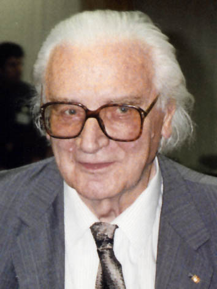

Konrad Ernst Otto Zuse (* 22. Juni 1910 in Deutsch-Wilmersdorf; † 18. Dezember 1995 in Hünfeld) war ein deutscher Bauingenieur, Erfinder und Unternehmer (Zuse KG). Mit seiner Entwicklung der Rechenmaschine Z3 im Jahre 1941 baute Zuse den ersten funktionstüchtigen, vollautomatischen, programmgesteuerten und frei programmierbaren, in binärer Gleitkommarechnung arbeitenden Rechner und somit den ersten funktionsfähigen Computer der Welt.
Konrad Zuse wurde als Sohn von Maria und Emil Zuse geboren. Er hatte eine ältere Schwester, über die er meinte: „Sie hatte das Pech, in der damaligen Zeit als intelligenter Mensch und Frau geboren zu sein.“[1] Als er zwei Jahre alt war, zog die Familie in das ostpreußische Braunsberg, wo der Vater als Postbeamter im mittleren Dienst arbeitete. Dort besuchte er das humanistische Gymnasium Hosianum. Als er 1923 in der 9. Klasse war, zog die Familie Zuse nach Hoyerswerda, wo er das Reform-Realgymnasium, das heutige Lessing-Gymnasium, besuchte. Bereits im Alter von 14 Jahren tüftelte er an Erfindungen; „Zuses Mandarinenautomat“ gab auf Münzeinwurf Obst und Wechselgeld heraus.[2] Mit dem Metallbaukasten der Firma Stabil baute er mit 18 Jahren einen Kohlenverladekran zusammen, wofür er die Ehrenurkunde der Firma erhielt.[2] 1928 legte er sein Abitur ab.
use bezeichnete sich selbst als „Bummelstudenten“.[3] Als 17-Jähriger studierte er an der Technischen Hochschule Berlin-Charlottenburg (heute Technische Universität Berlin) zunächst Maschinenbau, wechselte dann zur Architektur und schließlich zum Bauingenieurswesen. Zwischendurch arbeitete er fast ein Jahr lang als Reklamezeichner.[4] Während seines Studiums wurde er Mitglied in der Berliner Studentenverbindung AV Motiv.[5][6] Schon früh entdeckte er seine Vorliebe für Technik und Kunst.